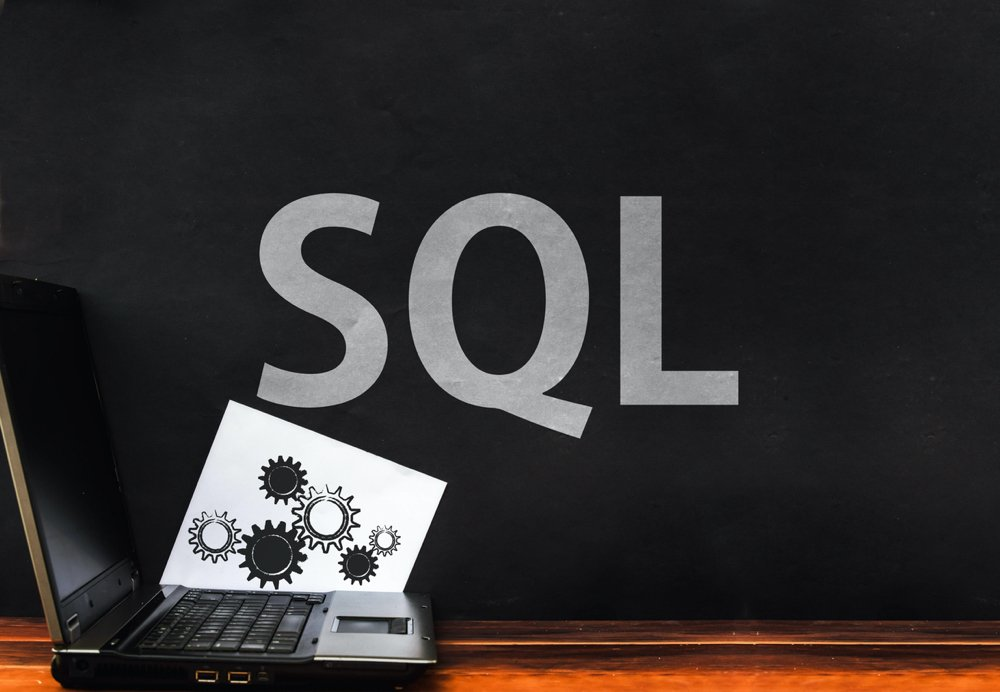
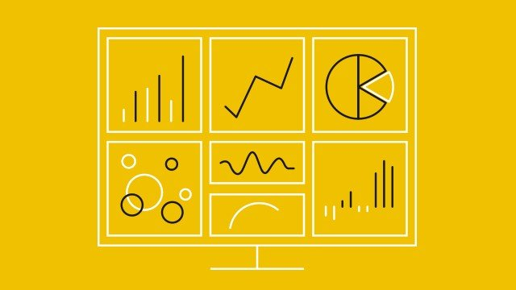

In this section, I query information from relational databases for analysis. I have working knowledge of MySql, T-Sql, Postgresql and phpmyadmin which I try to demonstrate in my projects below.


For my Power Bi projects, I performed ETL (Extract, Transform and Load) on the datasets and created dashboards after performing data cleansing using power query and also performed some DAX.

This section takes you to my Tableau public profile which contains all of my Tableau dashboards created using various datasets.
In this section, you are redirected to my Github page where I share python codes to my projects where I conducted some exploratory data analysis and webscraping. I use libraries such as pandas, numpy, seaborn, matplotlib, plotly, tweepy and beautifulsoup to analyse and visualize various datasets

Here, I showcase skillsets such as data cleaning, filtering, conditional formatting, vlookup, xlookup, fuzzylookup and dashboards using Microsoft Excel.